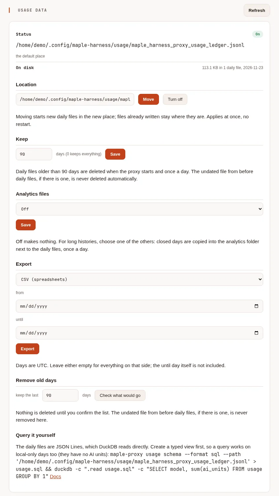
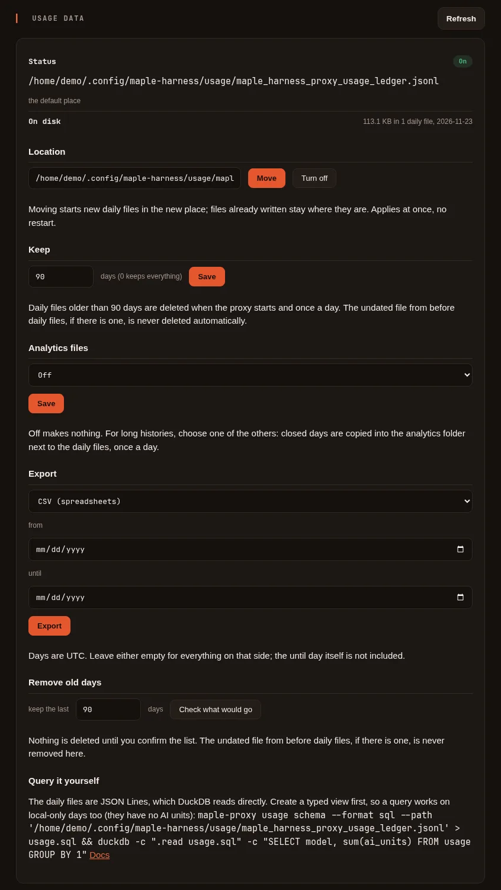

Your data48 min read
Your usage data #
On this page
- In plain words
- Where the files are
- How long it is kept
- Turn it off
- From the setup page
- Query it directly with DuckDB
- Named views
- Lots of history? Use the DuckDB file or monthly Parquet
- Several pods? Query Postgres
- Cost and savings
- The usage record schema
- The events log
- Export to CSV or Parquet
- Filter your data
- Keep it tidy: prune
- Wire it into Grafana
- Every usage command
- Troubleshooting
- See also
Every request through the proxy leaves one line in a usage log on your own disk: which model answered, the tokens,
the AI units, how long it took and how it ended. Counts and labels only, never a prompt, an answer or a key, and in
plain files you own rather than locked inside Maple. This page is the reference for that log: where it lives, how
long it is kept, every column, and every way to read it (DuckDB, CSV or Parquet, usage query, Grafana).
The log is on by default and keeps 90 days. Its settings are server.usage_ledger and
server.usage_retention_days (The usage log). New to it?
See and filter your usage is the guide with examples; Your data says where the
data can live (the daily files, PostgreSQL, a lake), and Query your usage has tested recipes.
Pick your job:
- Where the files are The folder, the file names, the disk it takes, and how to move it.
- Query it with DuckDB Plain SQL over your own files, with typed views and ready-made answers.
- Filter it in a terminal
usage queryfor totals and tables, no DuckDB needed. - Export to CSV or Parquet Hand the data to a spreadsheet, a notebook or a warehouse.
- Every column The versioned schema, what each field means, and when it is empty.
- Wire it into Grafana Dashboards from the files with Grafana's own plugins.
In plain words #
- What it is. A receipt drawer for your model requests: one line per request, one file per day, in your config folder. What was asked, who answered, how big it was, how long it took, how it ended. Nothing you typed.
- What you can do with it. Ask it questions (what did last week cost, which tool used the most, how often did a provider fail), export it, or chart it. The proxy does not need to be running for any of it: the commands only read files.
- Without a terminal. On the setup page, Data & storage, the Usage data card moves, keeps, exports or prunes the log.
- What it is not. A bill. AI units are what the provider reported; anything named
_estimatedis an estimate. Your provider's own console is the authority on what you were charged.
Your first answer, in under a minute:
maple-proxy usage statussays where the log is, how many days it holds and the disk it takes.maple-proxy usage query --last 7d --group-by modelprints this week's requests, tokens and AI units per model.- Want SQL?
maple-proxy usage schema --format sql --views > maple.sql, thenduckdb -cmd ".read maple.sql"andSELECT * FROM maple.daily_spend ORDER BY day DESC;(Named views).
Where the files are #
By default the log is in the usage folder of your Maple Harness config folder
(~/.config/maple-harness/usage/ on Linux and macOS), one file per UTC day with a name nothing else uses:
maple_harness_proxy_usage_ledger-2026-09-28.jsonl, maple_harness_proxy_usage_ledger-2026-09-29.jsonl, and so on.
The folder is created private to you the first time the proxy writes to it.
To put it somewhere else, set server.usage_ledger to a path, or use Move on the setup page's Usage data card:
usage_ledger: /data/maple/usage.jsonl writes usage-2026-09-28.jsonl and the rest next to it: the daily files are
always named after the path, with the day before the extension. A path you set yourself, including the usage.jsonl
in your config folder that the earlier Turn on button chose, keeps working exactly where it is, with the same
names; nothing is moved or renamed. Moving the log starts new daily files in the new place and leaves the files
already written where they are. If you have a plain, undated usage.jsonl from before daily files existed, it is left
exactly where it is: still readable, just not written to going forward.
How much disk it takes, as an estimate: about 0.25 KB for a request with no cost or savings figures and about 0.65 KB
for a priced one (measured on sample lines), so 1,000 requests a day for 90 days is roughly 22 to 58 MB. The Usage data card and maple-proxy usage status
show what your own files take.
Each line is one request: the model, provider, tokens, cache figures, AI units, timing, who asked (a client label, and the session it belongs to), and what the proxy estimates it saved and cost — never prompt or answer content. Every field is in the usage record schema below.
How long it is kept #
Old days are deleted
server.usage_retention_days (Keep on the Usage data card) is how many days of daily files to keep. Older daily
files are deleted when the proxy starts and then once a day, the proxy logs one line saying what it removed, and each
cleanup that deletes files is recorded in the audit log (how many, and the folder). 0 keeps everything.
Left unset, it is 90 days in the default place (in the usage folder the proxy created, only files named exactly
maple_harness_proxy_usage_ledger-YYYY-MM-DD.jsonl). For a path you chose yourself, nothing is deleted automatically
until you set Keep; the card says so ("Automatic cleanup is off for a custom location"). Only the log's own dated
files next to the configured path are ever deleted, and only when they are empty or start with a usage record: never today's file, never the plain undated file from earlier
releases, never any other file in the folder, never a link, and never a file that also has another name (a hard
link). If the folder you chose is itself a link (to a synced folder, say), cleanup follows it, as the log does; the
default folder is never a link. Budgets count only today, so a shorter retention does
not change them. A change on the card applies without a restart, from the next cleanup.
A path you give for the log must be a full path, or start with ~/ for your home folder.
Turn it off #
Press Turn off on the Usage data card (or on the one-time notice the setup page shows after upgrading), or set
usage_ledger: off in config.yaml. For one run of the proxy, CCH_USAGE_LEDGER=off in its environment does the
same (and CCH_USAGE_LEDGER=/some/path sends that run's log elsewhere). Nothing already written is deleted. Only
off turns it off: an empty usage_ledger: "", which earlier releases saved while the log was off, now means the
default place, so an upgraded install starts logging. With the log off, budgets restart from zero whenever the proxy
restarts.
After upgrading, the setup page shows a one-time notice (at the top of the page and on the Usage data card) while
the log is on because of the default: OK keeps it on, Turn off turns it off. Either answer is saved in
config.yaml, so no other browser shows it again, and the proxy logs one line at start saying the log is on by
default.
From the setup page #
The proxy's setup page has, on its Data & storage page, a Usage data card with everything below without a terminal: whether the log is on and
where; how much disk the daily files take, how many there are and the days they cover, with an estimate at the
retention limit once there is a whole day of data; Location (Move, Use the default place, Turn off); Keep,
the retention in days; an Export button that downloads CSV or Parquet for an
optional range of days; and Remove old days, which shows you exactly which files would go and deletes them only
after you confirm that list. It uses the same code as maple-proxy usage, so the card and the command always agree
on which requests a range covers and which files a prune removes. If the usage log is off, the card says so and
has a Turn on button.


Query it directly with DuckDB #
This is the fastest way to ask a real question of your own data — no export step, no code. DuckDB
reads JSON Lines natively. Start by creating a typed view named usage:
maple-proxy usage schema --format sql > usage.sql
duckdb -c ".read usage.sql" -c "SELECT model, count(*) AS requests, sum(ai_units) AS ai_units FROM usage GROUP BY model ORDER BY ai_units DESC"usage schema --format sql prints a CREATE OR REPLACE VIEW usage AS ... statement over every daily file (it finds them
the same way usage export does; --path names the log directly). The view declares every column and its type, so it
has the same shape on every day: a day with only local models, which report no AI units, has ai_units as 0, not a
missing column. Keep usage.sql somewhere fixed and add .read /full/path/to/usage.sql to ~/.duckdbrc, and every
duckdb session has the view.
Why not read_json_auto: it guesses the columns from the data it samples. A field the log leaves out when it is empty
(ai_units for a local model, error when nothing failed, the labels) is simply not a column on a day that never
has it, so a query naming it fails with Referenced column "ai_units" not found. Declaring the columns avoids that.
With the view in place, queries are plain SQL:
SELECT model, count(*) AS requests, sum(ai_units) AS ai_units
FROM usage
GROUP BY model
ORDER BY ai_units DESC;SELECT date_trunc('day', "at") AS day, provider,
sum(input_tokens) AS input_tokens, sum(cached_tokens) AS cached_tokens, sum(ai_units) AS ai_units
FROM usage
WHERE "at" >= TIMESTAMPTZ '2026-09-20'
GROUP BY ALL
ORDER BY day, provider;at is a reserved word in DuckDB, so write it in double quotes. In the view it is a timestamp; in the files it is
ISO-8601 text in UTC. To narrow by file instead, name fewer files: --path still takes the base path, but a
hand-written query can use a narrower glob built the same way from your log's name, such as
maple_harness_proxy_usage_ledger-2026-09-2*.jsonl in the default place (or usage-2026-09-2*.jsonl for a log you
named usage.jsonl).
Without maple-proxy at hand (on another machine, say), declare the columns you use yourself and give the ones a
line may leave out a default:
SELECT model, count(*) AS requests, sum(COALESCE(ai_units, 0)) AS ai_units
FROM read_json('~/.config/maple-harness/usage/maple_harness_proxy_usage_ledger-*.jsonl',
format = 'newline_delimited', ignore_errors = true,
columns = {'at': 'VARCHAR', 'model': 'VARCHAR', 'ai_units': 'DOUBLE'})
WHERE "at" IS NOT NULL
GROUP BY model
ORDER BY ai_units DESC;ignore_errors and the WHERE skip a line cut short when the proxy was stopped mid-write, as the proxy's own
readers do. maple-proxy usage schema --format duckdb prints the full columns value for every field.
Named views #
For the questions most people ask, --views adds ready-made views to the usage view:
maple-proxy usage schema --format sql --views > maple.sql
duckdb -cmd ".read maple.sql"The output starts with exactly what usage schema --format sql prints without --views, then makes a schema named
maple (CREATE SCHEMA IF NOT EXISTS maple) and the views inside it. Nothing outside that schema is created or
replaced, so a view of yours named requests or sessions stays as it is, and --format sql without --views prints
the same as before. The views read maple.usage, a copy of the usage view, so they keep working if you change your
own usage view. --source csv or --source parquet with --path FILE makes the same views over an export;
--source parquet-monthly and --source postgres are below.
| View | One row per | What it has |
|---|---|---|
| maple.requests | request | every column of usage, plus day (the UTC day), outcome (warming, cached, error, fallback or ok), and person reading unattributed where the line names nobody |
| maple.daily_spend | UTC day, provider, model, person and team | requests, the four token counts, AI units, and the list-price estimate with its currency; the proxies that recorded them and the account sources |
| maple.sessions | session id | first and last request, requests, the models that answered, AI units, the list-price estimate, and cache_hit_rate: the share of the requests the prompt cache classified that were a hit |
| maple.people | person and team | requests, AI units, the list-price estimate, the days active, first and last request; the first proxies they asked and the account sources |
| maple.provider_health | provider, model and UTC hour | requests that reached a provider, errors and the error rate, errors_by_class (a map from error_class to a count), and the median and 95th percentile of the duration, the time spent waiting on the provider and the time to the first token |
| maple.alerts | alert event | when, state (fired or resolved), scope, rule, level and the measured value, from the events log |
| maple.events | event | every line of the events log |
| maple.child_usage | line sent up by a proxy below | the same columns as usage, for a hub; empty otherwise |
| maple.hops | line | usage and child_usage together: one line for each proxy a request passed through |
| maple.client_requests | client request | its first try on the proxy where it was asked, with ai_units_spent and cost_estimated_spent counted once, where they were spent, and lines |
| maple.proxies | proxy and how its lines arrived | lines, client requests that started there, lines of requests that came through other proxies, the first proxies, running copies, and spend counted where it was spent |
| maple.origins | first proxy, person and team | client requests and their spend, counted once |
Things to know when reading them:
- Each try of a request that fell back to another model is its own line, so
requestscounts tries. - A column added in a later schema version is NULL on older lines, never 0: lines before version 4 have no time to the
first token or time on the provider, so
provider_healthreports those percentiles from version 4 lines only, andttft_measuredsays how many requests each one comes from. The time to the first token is measured for streamed requests only. personreadsunattributedwhere no person was recorded (see Requests with no person), somaple.peoplehas anunattributedrow once any request has none.- The list-price estimate (
cost_estimated) is an estimate from published prices, not a bill, and is separate from AI units: never add the two together. maple.alertsandmaple.eventsread the events files next to the usage log. An export holds no events, so over an export they are empty, and they are empty until the proxy has written an events file (print the views again after that).
What each one is for, as a query:
-- How did requests end, day by day?
SELECT day, outcome, count(*) AS requests
FROM maple.requests
GROUP BY ALL
ORDER BY day, outcome;-- Spend by day and provider.
SELECT day, provider, sum(requests) AS requests, sum(ai_units) AS ai_units, sum(cost_estimated) AS cost_estimated
FROM maple.daily_spend
GROUP BY ALL
ORDER BY day, provider;-- The ten sessions that used the most AI units.
SELECT session, first_at, last_at, requests, models, ai_units, cache_hit_rate
FROM maple.sessions
ORDER BY ai_units DESC
LIMIT 10;-- Who used what.
SELECT person, team, requests, ai_units, days_active
FROM maple.people
ORDER BY ai_units DESC;-- Hours when a provider's error rate was above 5%, with the classes of error.
SELECT provider, model, hour, requests, errors, round(error_rate, 3) AS error_rate, errors_by_class,
ttft_p50_ms, ttft_p95_ms, ttft_measured
FROM maple.provider_health
WHERE error_rate > 0.05
ORDER BY hour DESC, provider;-- Alerts, newest first.
SELECT "at", state, scope, rule, level, value
FROM maple.alerts
ORDER BY "at" DESC;-- Settings changed, newest first (key paths only).
SELECT "at", subject AS setting, code, value, detail
FROM maple.events
WHERE kind = 'config.change'
ORDER BY "at" DESC;Lots of history? Use the DuckDB file or monthly Parquet #
A view over the daily files reads one file for every day. That is quick for weeks of data; over months or years, and on a hub that also keeps what the proxies below it send up, it gets slower. Two ways to read far fewer files:
Monthly Parquet files. maple-proxy usage compact packs each month's closed UTC days into one Parquet file
(usage-2026-09.parquet, plus events-2026-09.parquet and children-2026-09.parquet when there are events or lines
from below), in a folder named analytics inside the usage log's folder. Today's file is never packed. Run it again
whenever you like: only a month whose daily files changed is written again (--rebuild writes them all, --month
2026-09 only one).
maple-proxy usage compact
maple-proxy usage schema --format sql --views --source parquet-monthly > maple.sql
duckdb -cmd ".read maple.sql"The views read the monthly files plus every daily file they do not cover (today's, and a day that changed since it was packed), so they hold exactly what the views over the daily files hold. The list of files is the one there was when the SQL was printed: print it again after the next compaction, or the next day.
A DuckDB file. maple-proxy usage duckdb loads your usage into one file, maple_usage.duckdb in the same
analytics folder, with two tables, usage and events, and every named view inside it. It runs your own duckdb
command line (install it; nothing is downloaded for you, and --duckdb or
MAPLE_DUCKDB names one that is not on your PATH, by its full path). Run it again to refresh it: only what the
daily files gained since the last run is read. --rebuild starts the file again from the daily files, and --out
puts it somewhere else.
maple-proxy usage duckdb
duckdb ~/.config/maple-harness/usage/analytics/maple_usage.duckdbSELECT * FROM maple.daily_spend ORDER BY day DESC LIMIT 20;- The
usagetable holds this proxy's lines and, on a hub, those its children sent up (sourceischild);maple.usageandmaple.child_usagesplit them as the views over the files do. Both tables have two more columns,loaded_from(the daily file a row came from) andloaded_at; the views leave them out. - The file follows the log: rows of a daily file that the cleanup deleted leave at the next refresh, and a file replaced under its own name is read again from the start.
- A refresh works on a copy and puts it in place only when it is complete: a run that fails leaves the file as it
was, and a session that has it open keeps reading what it opened.
--dry-runsays what a refresh would load. - It is named
maple_usage.duckdbbecause DuckDB names a database after its file, and a database namedmaplewould makemaple.daily_spendambiguous.
Or let the proxy keep them. Analytics files on the Usage data card (server.usage_analytics) refreshes them
once a day, after the cleanup: parquet the monthly files; duckdb those and the DuckDB file; lake those and a
DuckLake. It is off unless you choose it, and the DuckDB file and the lake
need the duckdb command line installed.
The monthly files and the DuckDB file are copies, private to you like the daily files. A monthly file is deleted as
soon as a day it was made from is deleted (by the cleanup, usage prune or Remove old days), and a month whose
daily files changed is not read until it is packed again. Nothing that lists or deletes the daily files ever looks
inside analytics. To stop, set Analytics files to off and delete the analytics folder.
Too many open files? DuckDB keeps a few files open for each thread it runs, however many daily files there
are. If a query stops with that error, lower its threads (SET threads = 4;), raise the limit in the shell that
starts duckdb (ulimit -n 4096), or query the DuckDB file, which is one file.
Several pods? Query Postgres #
In central mode (Kubernetes) every replica writes to one PostgreSQL, so there are no daily files on
any one machine. --source postgres prints the same named views over the shared tables, through DuckDB's postgres
extension:
export MAPLE_PG_DSN='host=postgres.maple.svc dbname=maple user=analyst'
maple-proxy usage schema --format sql --views --source postgres --dsn-env MAPLE_PG_DSN > maple-pg.sql
duckdb -cmd ".read maple-pg.sql"The connection string is read from the variable each time a view is queried; it is never written into the SQL. Use
a role that can only read, and keep its password out of the string (in PGPASSWORD or a .pgpass file): DuckDB
prints the connection string when it cannot connect. (Maple's own commands hide it in the errors they show.) The views read the
stored lines the way the views over the files read the daily files, so the two agree; --pg-schema names a schema
other than public. For history beyond what PostgreSQL keeps (storage.retention_days), move it into a
lake.
Cost and savings #
Each line carries what the request cost and, as estimates, what the proxy's techniques saved and cost on it: the
same figures the setup page's Savings card and maple-proxy savings show, per request. The card adds them up; the log
keeps them one request at a time, so you can add them up your own way. A sum over a day matches the card's figures for
that day (the card's "today" starts at your local midnight, while at is in UTC; see below).
- What a request cost.
ai_unitsis what the provider billed, when it reports it (measured).cost_estimatedis an estimate at a provider's published list prices, in the currency named incost_currency, for a provider set up to give one. A request has one or the other: keep them in separate columns, never add them together. - What the techniques saved. Every
*_estimatedcolumn is an estimate, never a measurement. A saving is measured against what the same request would likely have cost without that technique, valued at prices estimated from your own requests' costs; costs of the techniques are in their own columns so you can subtract them.pricedsays whether a value could be put on the request at all: when it is false the AI-unit columns are 0 because nothing was valued, not because nothing was saved. - The headline. The Savings card's headline counts only the prompt cache and trimming:
cache_saved_estimated+trim_saved_estimated, minuscache_write_surcharge_estimated+trim_cost_estimated, minus theai_unitsof the proxy's own cache-warming requests (warming = true; the query'swarming_ai_units). The other techniques are on their own lines, not in the headline. What you would have spent without them isai_unitsplus that net. A sum of these columns over a day is exactly the card's headline for that day. - Cache warming. A request the proxy sent itself to keep a cache alive has
warming = true; what it cost is itsai_units, andwarming_expected_saved_estimatedis the saving expected when it was sent, not a confirmed one. - Response cache. A request answered from the proxy's response cache (
response_cache: on) hascached_response = trueand 0 tokens and 0ai_units: nothing was sent to the provider.response_cache_saved_estimatedis an estimate of what the repeat would have cost, the lower of what the original request cost and what it would have cost with all of its input read from the prompt cache. It is on its own line on the Savings card, not in the headline. - Sessions.
sessiongroups a Maple Harness session with its subagents (they send the session's id), the same grouping as the setup page's Sessions card.convis narrower: it groups the requests of one conversation, so a subagent is its ownconv. Other clients can send the same header; lines from a client that does not, and cache-warming requests, have no session.
A request for a model no provider here serves has a line too: an error (error_class model_not_found) with no
provider, tokens or AI units. fallback is true on every fallback attempt, answered or not; the query's fallbacks
metric counts them all, while its outcome names one per line, an error first.
A request that failed but still reported AI units was billed for them: the Savings card's "You spent" and the AI
units tile count them, as a plain sum(ai_units) does. The techniques' estimates are only ever on requests that
completed.
Cost per day, in AI units and in list-price estimates:
SELECT date_trunc('day', "at") AS day,
sum(ai_units) AS ai_units,
sum(cost_estimated) AS cost_estimated, any_value(cost_currency) AS currency
FROM usage
WHERE error IS NULL
GROUP BY ALL
ORDER BY day;Cost per model:
SELECT provider, model, count(*) AS requests,
sum(ai_units) AS ai_units, sum(cost_estimated) AS cost_estimated
FROM usage
WHERE error IS NULL
GROUP BY ALL
ORDER BY ai_units DESC;Cache saved per day (estimated), next to what the cache writes cost and what was spent:
SELECT date_trunc('day', "at") AS day,
sum(ai_units) AS spent,
sum(cache_saved_estimated) AS cache_saved_estimated,
sum(cache_write_surcharge_estimated) AS cache_write_cost_estimated,
count(*) FILTER (WHERE NOT priced) AS requests_not_valued
FROM usage
WHERE schema_version >= 2 AND error IS NULL
GROUP BY ALL
ORDER BY day;What trimming saved against what it cost (estimated):
SELECT date_trunc('day', "at") AS day,
sum(trim_saved_tokens_estimated) AS tokens_left_out,
sum(trim_saved_estimated) AS saved_estimated,
sum(trim_cost_estimated) AS cost_estimated,
sum(trim_saved_estimated) - sum(trim_cost_estimated) AS net_estimated
FROM usage
WHERE schema_version >= 2 AND error IS NULL
GROUP BY ALL
ORDER BY day;How often the response cache would have answered: requests identical to one sent within the last five minutes (the
same request_hash: the same request, from the same client, to the same provider account), by client and model.
maple-proxy usage cache-potential answers the same question without DuckDB, following exactly what the cache would do;
this query is the simpler version, which compares each request with the one just before it:
WITH r AS (
SELECT client, provider, model, request_hash, "at", ai_units, cached_response,
lag("at") OVER (PARTITION BY request_hash ORDER BY "at") AS previous
FROM usage
WHERE request_hash IS NOT NULL AND NOT warming
)
SELECT client, provider, model, count(*) AS requests,
count(*) FILTER (WHERE previous >= "at" - INTERVAL 5 MINUTE) AS repeats,
count(*) FILTER (WHERE cached_response) AS answered_from_cache,
sum(ai_units) FILTER (WHERE previous >= "at" - INTERVAL 5 MINUTE) AS repeats_ai_units
FROM r
GROUP BY ALL
ORDER BY repeats DESC;Only requests recorded by a release with version 3 of the schema carry request_hash, and a request with images or
whose last message is a tool call or a tool result never does. The count is an upper bound: the cache also needs the
request to be repeatable and the earlier answer to have finished normally, which the log does not record.
Spend per conversation and per session:
SELECT session, conv, count(*) AS requests, min("at") AS first, max("at") AS last,
sum(ai_units) AS ai_units, sum(cost_estimated) AS cost_estimated
FROM usage
WHERE error IS NULL
GROUP BY ALL
ORDER BY ai_units DESC
LIMIT 20;session is a random id, not the name you gave the session. Each saved Maple Harness session keeps its id in its own
file, in the folder maple-harness sessions path prints, so you can put the names next to it:
SELECT coalesce(s.name, u.session) AS session, count(*) AS requests, sum(u.ai_units) AS ai_units
FROM usage u
LEFT JOIN read_json('~/.config/maple-harness/sessions/*.json',
columns = {'name': 'VARCHAR', 'session_id': 'VARCHAR'},
maximum_object_size = 268435456) s
ON s.session_id = u.session
WHERE u.session IS NOT NULL AND u.error IS NULL
GROUP BY ALL
ORDER BY ai_units DESC;Only the name and the id are read from those files. Lines written before version 2 have no session (NULL).
The Savings card's day starts at local midnight; to match it exactly, group by your local day, for example
date_trunc('day', "at" AT TIME ZONE 'Europe/Lisbon') with your own time zone.
The usage record schema #
Every line of the log, and every row of an export, is one usage record. The schema is versioned; this release writes version 9, with 99 columns. The promise: a later version may add columns at the end, and never renames, removes, reorders or retypes one. Lines written by earlier releases stay readable and have none of the columns added after their version: the view, CSV and Parquet show them as NULL on those lines, never as a 0 that would read as "nothing saved".
| Version | Added (the columns from this one on) | In short |
|---|---|---|
| 1 | at to cache_reason | The request: model, provider, tokens, cache figures, AI units, timing, client labels |
| 2 | schema_version | The session, the cache-warming flag, a list-price estimate, and the Savings card's cost and savings figures, per request |
| 3 | request_hash | request_hash, cached_response and response_cache_saved_estimated |
| 4 | person | Who asked, the client's version, the time to the first token and on the provider, a fixed error class, how the request was routed, fingerprints of the tools and the system prompt, the budget that counted it |
| 5 | proxy_id | Which proxy and running copy wrote the line, where the request came from through chained proxies (origin_proxy, hops, via), why its account was used, ids for the line and the request |
| 6 | cache_write_1h_tokens | What the provider reported beyond the token counts (hour-long cache writes, the thinking share, service tier, where inference ran, speed, web searches), and the request at list prices (list_cost_usd, what monthly dollar budgets count) |
| 7 | price_source | Where the prices a request's savings were valued with came from |
| 8 | list_ai_units | The cost at the model's published list price and the discount taken off it, the cost at a discount you configured, the request's part in a Copilot Fusion turn, and who the provider was told started it |
| 9 | tags | The request's tags, whether a line is a whole batch's usage, which cache answered (response_cache_kind) and, for the semantic cache, how close the match was. Version 9 also names new values in existing columns: codex as a client, responses as a surface, content refused as an error class |
request_hash never holds content. It is a keyed hash of the request, salted with a random value made once for your
install and kept in the proxy's secret store, so the same request gives the same value on your install only: it cannot
be matched with another install's, or worked out from a known prompt without that value. tools_hash and
system_hash are made the same way, from the tool definitions and from the system prompt alone, so you can see when
a client changed either without either being stored.
A request that fell back to another model is one line per try: the failed try has the error and error_class, and
the line of the model that answered has attempts 2 or more, first_choice and route_reason. cache_detail is in
the schema already but not filled in by this release. Through chained proxies, each proxy writes its own line for the
same request, and person and team name the original requester on every one of them. ttft_ms and upstream_ms exist
from version 4 on; older lines have them NULL.
| Column | Type | Unit | Always in a log line? | Meaning |
|---|---|---|---|---|
at | timestamp (text) | — | yes | When the request was recorded (UTC, RFC 3339 text). |
duration_ms | integer | milliseconds | yes | How long the request took. |
requested | text | — | yes | The model name the client asked for (may be a routing alias such as auto). |
model | text | — | yes | The model that answered. |
provider | text | — | yes | The provider that answered. |
streamed | boolean | — | yes | Whether the answer was streamed. |
tools | integer | count | yes | Tool definitions sent with the request. |
messages | integer | count | yes | Messages in the request. |
input_tokens | integer | tokens | yes | Input tokens, as the provider reported them. |
output_tokens | integer | tokens | yes | Output tokens, as the provider reported them. |
cached_tokens | integer | tokens | yes | Input tokens read from the provider's prompt cache (0 when the provider reports none). |
cache_ | integer | tokens | yes | Input tokens written to the provider's prompt cache (0 when the provider reports none). |
ai_units | decimal | AI units | no: absent means 0 | What the request cost in the provider's own units, when it reports them. Local models report none. |
error | text | — | no: absent means no error | Why the request failed, if it did. |
client | text | — | no: absent means unknown | The access token's label, or local for a caller on this machine without one (never the token itself). |
agent | text | — | no: absent means unknown | The kind of client, from its User-Agent: claude-code, opencode, codex, maple-harness, hermes or other. |
surface | text | — | no: absent means unknown | The API the caller used: chat (OpenAI chat completions), responses (the OpenAI Responses API) or messages (Anthropic-compatible); for the other routes, rerank, moderations, images, audio, files, batches or passthrough. |
prefix | text | — | no: absent means unknown | An opaque grouping label (never content). |
setup | text | — | no: absent means unknown | An opaque grouping label (never content). |
conv | text | — | no: absent means unknown | An opaque label grouping the requests of one conversation (never content). |
fallback | boolean | — | no: absent means false | Whether the request was answered by a fallback after the first choice failed. |
cache_class | text | — | no: absent means not classified | How the provider's prompt cache did: hit, partial, miss, lost or n/a. |
cache_reason | text | — | no: absent means no reason given | For a miss or a loss, a short reason. |
schema_version | integer | — | no (version 2): absent means 1 | The schema version the line was written with. |
session | text | — | no (version 2): absent means unknown | An opaque id a client sends to group its requests into one session; Maple Harness sends its session's id (never content). |
warming | boolean | — | no (version 2): absent means false | Whether the proxy sent this request itself, to keep a provider's prompt cache from expiring while a conversation was idle. What it cost is in ai_units. |
cost_estimated | decimal | the currency in cost_currency | no (version 2): absent means no estimate | An estimate of what the request cost at the provider's published list prices, from a provider set up to give one. Not a bill, and separate from ai_units: never add the two together. |
cost_currency | text | — | no (version 2): absent means no estimate | The currency of cost_estimated, such as USD. |
priced | boolean | — | no (version 2): absent means false | Whether the proxy could put an AI-unit value on this request's savings, which needs a few earlier requests to the same model. When false, the AI-unit savings columns are 0 because nothing was valued, not because nothing was saved. |
cache_ | decimal | AI units | no (version 2): absent means 0 | Estimated: what the provider's prompt cache saved on this request, against paying for the same tokens without the cache. |
cache_ | decimal | AI units | no (version 2): absent means 0 | Estimated: what writing to the prompt cache cost on this request above that same price. |
trim_ | integer | tokens | no (version 2): absent means 0 | Estimated from their length: tokens that trimming left out of this request. |
trim_ | decimal | AI units | no (version 2): absent means 0 | Estimated: what trimming saved on this request, valued at the price of a cached token, the lowest a resent token can cost. Negative when the model asked again for a trimmed result and an earlier saving was taken back. |
trim_ | decimal | AI units | no (version 2): absent means 0 | Estimated: what trimming cost on this request: rewriting the prompt cache after a batch of trimming, and a request that only repeated a call whose result was trimmed. |
images_ | integer | tokens | no (version 2): absent means 0 | Estimated from each provider's published image formula: image tokens avoided by resizing or replacing images in this request. |
images_ | decimal | AI units | no (version 2): absent means 0 | Estimated: what sending fewer image tokens saved on this request. |
images_ | decimal | AI units | no (version 2): absent means 0 | Estimated: the prompt-cache rewrite a newly replaced image cost on this request. |
snapshots_ | integer | tokens | no (version 2): absent means 0 | Estimated (characters divided by four): tokens left out of browser page snapshots in this request. |
snapshots_ | decimal | AI units | no (version 2): absent means 0 | Estimated: what leaving those snapshot tokens out saved on this request. |
snapshots_ | decimal | AI units | no (version 2): absent means 0 | Estimated: a request that only asked again for a snapshot straight after a trimmed one. |
stabiliser_ | decimal | AI units | no (version 2): absent means 0 | Estimated: what the prefix stabiliser saved on this request. Shown on the Savings card on its own line, not in its headline. |
warming_ | decimal | AI units | no (version 2): absent means 0 | Estimated, on a cache-warming request: the saving expected when it was sent, not a confirmed outcome. Shown on the Savings card on its own line, not in its headline. |
request_hash | text | — | no (version 3): absent means no value | An opaque value, the same for identical requests from the same client to the same provider account, and never content. Absent for a request the response cache could never answer (images, a tool turn). |
cached_ | boolean | — | no (version 3): absent means false | Whether the proxy answered from its response cache. Nothing was sent to the provider, so the token and cost columns are 0. |
response_ | decimal | AI units | no (version 3): absent means 0 | Estimated, on a request answered from the response cache: what the repeat would have cost. Shown on the Savings card on its own line, not in its headline. |
person | text | — | no (version 4): absent means unattributed | Who sent the request: the person their access token belongs to, or local for a caller on this machine without one, once people are set up. Through chained proxies, the original requester, as the proxy where they asked named them. |
team | text | — | no (version 4): absent means no team | The team of the person who sent the request. Through chained proxies, the original requester's team. |
agent_version | text | — | no (version 4): absent means unknown | The client's version as major.minor, from its User-Agent, when it gives one. |
ttft_ms | integer | milliseconds | no (version 4): absent means not measured | Streamed requests only: the time from sending the request to the provider until its first output (text, thinking or a tool call) arrived. |
upstream_ms | integer | milliseconds | no (version 4): absent means not measured | The time spent waiting on the provider for this request, apart from the proxy's own work and from waiting on the client to read a streamed answer. |
error_class | text | — | no (version 4): absent means no error | A fixed class for error: quota exhausted, rate limited, overloaded, server error, not authorised, unreachable, request too large, content refused, daily budget spent, canceled, repeat guard, or status and the HTTP code. |
attempts | integer | count | no (version 4): absent means 1 | How many requests went to a provider for one client request, up to and including this one: 2 or more when fallbacks were tried before it. Each try is its own line. Empty for an answer from the response cache, which went to no provider. |
first_choice | text | — | no (version 4): absent means the same as provider and model | The provider/model the request would have gone to first, when another one served this line. |
route_reason | text | — | no (version 4): absent means direct | A short code for why this line's provider and model were used: alias, auto, fallback:<class>, exhausted-order, health-demoted, person-policy, budget, or retry:lost-connection (the same server asked once more after its connection failed before any answer, 3.0). Absent when the model asked for was used directly. |
auto_weight | text | — | no (version 4): absent means not auto | heavy, medium or light, for a request to auto or to auto-heavy, auto-medium or auto-light. |
auto_basis | text | — | no (version 4): absent means not auto | A short code for what decided the auto weight, or what a provider's own router (Copilot Auto) did. Never content. |
cache_detail | text | — | no (version 4): absent means none | A finer reason under cache_reason. Not filled in by this release. |
tools_hash | text | — | no (version 4): absent means no value | An opaque value, the same for the same tool definitions on this install, and never content: a keyed hash salted per install. Absent for a request without tools. |
system_hash | text | — | no (version 4): absent means no value | An opaque value, the same for the same system prompt on this install, and never content: a keyed hash salted per install. Absent for a request without a system prompt. |
budget_scope | text | — | no (version 4): absent means none | Which configured budget counted the request: provider, person or team. Absent when none did. |
proxy_id | text | — | no (version 5): absent means unknown | The proxy that wrote the line: an id it made for itself when first started, the same for as long as its configuration folder is kept. Never a host name or address. |
proxy_name | text | — | no (version 5): absent means no name set | The name given to that proxy (server.proxy_name), when one is set. |
proxy_instance | text | — | no (version 5): absent means unknown | Which running copy of that proxy wrote the line, when several share one proxy_id (replicas behind one address): the pod name when it runs in one, else an id made when the proxy started. |
origin_proxy | text | — | no (version 5): absent means unknown | The first proxy the request reached, by its name (or its id when it has none): this proxy for a request sent to it directly, the one the person used for a request passed on through chained proxies. |
hops | integer | count | no (version 5): absent means 0 | How many proxies the request passed through before the one that wrote the line: 0 for a request sent to it directly. |
via | text | — | no (version 5): absent means none: the request came directly | The proxies the request passed through before this one, first to last, by name (or id), separated by >. |
account_source | text | — | no (version 5): absent means none | Why the provider account that served the line was used: person, team or default for an account assigned in the configuration, request when the request itself led there. Absent when no accounts are assigned. |
record_id | text | — | no (version 5): absent means no id | An id for this line, unique across every proxy and restart, so a line copied into a shared store twice can be told from two requests. Opaque. |
request_id | text | — | no (version 5): absent means no id | An id for the client request, made by the first proxy it reached and passed on with it: every line of one request (each try, on every proxy it went through) has the same one. Opaque. Absent on a request the proxy sent itself (cache warming). |
reported_by | text | — | no (version 5): absent means the proxy in proxy_id | On a line a hub received from a proxy below it (source child): the id of the proxy that sent it. Absent on a line this proxy recorded itself. |
source | text | — | no (version 5): absent means local | local for a line this proxy recorded itself, child for one a proxy below it sent up (kept apart from this proxy's own usage log). |
forwarded | boolean | — | no (version 5): absent means false | Whether the request was passed on to another Maple proxy: its tokens, AI units and cost are that proxy's figures, which that proxy's own line counts too. Leave these lines out when adding up spend across chained proxies. |
cache_ | integer | tokens | no (version 6): absent means not reported | The part of cache_write_tokens the provider keeps in its prompt cache for an hour; the rest were five-minute writes. Absent when the provider did not say. |
thinking_ | integer | tokens | no (version 6): absent means not reported | The part of output_tokens the model spent thinking, as the provider reported it. A breakdown only: output_tokens already includes it. |
service_tier | text | — | no (version 6): absent means not reported | The service tier the provider says served the request: standard, priority or batch. |
inference_geo | text | — | no (version 6): absent means not reported | Where the provider says inference ran, such as us when it ran in the US only. |
speed | text | — | no (version 6): absent means not reported | The speed the provider says served the request: standard or fast. |
web_ | integer | count | no (version 6): absent means none | How many web searches the provider ran on its side for the request. |
price_ | text | — | no (version 6): absent means not priced | The price list list_cost_usd was priced from, such as anthropic-2026-10-11 (the date it was read), config for a model's unit_price in config.yaml, or litellm for a price a LiteLLM gateway reported. |
list_cost_usd | number | USD | no (version 6): absent means not priced | Estimated: the request priced at the provider's published list prices, whether or not the provider is set up with estimate_cost (with price_basis reported: the price a LiteLLM gateway reported for it, as it said it). What monthly dollar budgets count. Not a bill, and separate from ai_units and from cost_estimated: never add them together. Your provider's own console is the authority on what you were charged. |
price_basis | text | — | no (version 6): absent means not priced | How list_cost_usd was priced: list for the model's own list price, family-highest when the model is not in the price list and was counted at the highest list price of its family, unit_price for an image or audio request priced per image, character or minute at the model's unit_price, batch_estimate for a batch whose usage was not read in time, counted at its estimate (price list estimate), stream_estimate for a stream that ended before the provider reported its usage, priced from tokens estimated from its text, reported for the price the provider reported for the call itself (a LiteLLM gateway, price list litellm): LiteLLM's figure, recorded as it said it, not Maple's estimate. |
price_source | text | — | no (version 7): absent means not valued, or (before version 7) valued with learned prices | Where the prices this request's AI-unit savings were valued with came from: copilot_stated (what Copilot stated it charged per token on the model's latest request through the same route), copilot_published (Copilot's published price, less the route's discount), learned (from the model's own earlier requests), copilot_auto_discount (the discount of Copilot Auto or Copilot Fusion applied to the same model's learned prices) or configured (the price set for the model in config.yaml; see Prices for each model). |
list_ai_units | number | AI units | no (version 8): absent means nothing published | The request's tokens at the model's published list price (the price by name, as Copilot publishes it). Compare with ai_units, what was charged: the difference is the provider's discount, never one of Maple's savings. |
discount_rate | number | fraction | no (version 8): absent means not known | The share of the list price taken off, such as 0.3 for 30% off. With a stated cost, what was actually taken off: 1 − ai_units / list_ai_units. |
discount_ | text | — | no (version 8): absent means not known | Where discount_rate came from: stated (what the provider charged, against its list price), promotion:<id> (a promotion the provider announced), observed (the rate the provider last charged in the same tier), model (the model's usual Copilot Auto discount), assumed (Copilot Auto's long-standing 10%, as nothing was published) or list (a request by name, at the list price). |
configured_ | number | AI units | no (version 8): absent means no discount configured | list_ai_units at the discount configured for the sign-in in config.yaml (providers[].discount): shown beside ai_units, never instead of it, and never counted by budgets. |
configured_ | number | fraction | no (version 8): absent means no discount configured | The configured discount configured_ai_units was valued at, such as 0.15 for 15% off. |
fusion_id | text | — | no (version 8): absent means not a Copilot Fusion High or Max request | The Copilot Fusion turn the request belongs to, the same on every request of the turn. |
fusion_tier | text | — | no (version 8): absent means not a Copilot Fusion High or Max request | The Copilot Fusion tier: high or max. A Copilot Fusion Standard request is a Copilot Auto request, with auto_basis copilot-auto. |
fusion_pattern | text | — | no (version 8): absent means not a Copilot Fusion request | How the turn was worked: single (one model), cascade (a solver, then a read-only review, and a stronger model when the review rejects the work) or critique (a draft, critics, then one revision); auto when Copilot could not plan the turn and Copilot Auto served it. |
fusion_rule | text | — | no (version 8): absent means not a Copilot Fusion request | The rule and policy version Copilot's plan named for the turn, as policy/rule. |
fusion_phase | text | — | no (version 8): absent means not a Copilot Fusion request | The request's part in the turn: solver, judge, escalation, repair, critic or revision, or fallback (Copilot could not plan the turn, and Copilot Auto served it). |
fusion_verdict | integer | score | no (version 8): absent means not a review request | On a review (judge) request: its score, 1 to 5; 3 and above accepts the work. |
fusion_outcome | text | — | no (version 8): absent means not the turn's last request | On the turn's last request: accepted (the review accepted the first answer), escalated (a stronger model's answer was used), repaired (the repair model's was), revised (a critique's revised answer was used), not_accepted (no answer passed the review, and the last one was used), done (a Single turn: one model did the task) or fallback (Copilot could not plan the turn, and Copilot Auto's answer was used). |
initiator | text | — | no (version 8): absent means not recorded | Who the provider was told started the request: user (you typed it), agent (the agent loop sent it after a tool's result, or Maple sent it itself) or agent-marked (the tool marked it as its own with X-Maple-Initiator, which is honoured only from this machine or a chained Maple proxy). |
tags | text | — | no (version 9): absent means no tags | The request's tags, comma-separated, as the client sent them in X-Maple-Tags or x-litellm-tags (letters, digits and . _ - : = / only; at most 8). |
whole_batch | boolean | — | no (version 9): absent means false | Whether the line is a whole batch's usage: its results for one model, or its estimate when its usage was not read in time. Counted in full against dollar budgets. |
response_ | text | — | no (version 9): absent means not answered from a cache | On a request answered from a cache (cached_response): exact (the response cache: the same request again) or semantic (the semantic cache: a latest message close in meaning to an earlier one). |
semantic_ | number | fraction | no (version 9): absent means not a semantic cache answer | On a semantic cache answer: how close in meaning the latest message was to the one the answer was first given to, from 0 to 1 (at least the threshold you set). |
"Always in a log line?" matters for anything that reads the log directly: a line leaves out a field that is empty.
Releases before this schema also left out ai_units when it was 0; current releases always write it. A version 2
line also leaves out a version 2 number or flag that is 0 or false, and a version 4 line leaves out attempts when it
is 1 and a time that was not measured; a version 5 line leaves out hops when it is 0. In an export every column is always present: CSV
writes an empty cell for a label with no value and 0/false for ai_units/fallback and for a version 2 number or
flag (attempts is 1 on a version 4 line that left it out, hops 0 on a version 5 line); Parquet stores the same labels as nulls, and records the schema version in the file's metadata
(maple.usage.schema_version). The version 2 columns come after all the version 1 columns, so a spreadsheet or query
that reads version 1 columns by position still finds them where they were; on a version 1 line they are empty cells in
CSV and nulls in Parquet. Each later version's columns come after the one before, in the same way.
The same schema, machine-readable:
maple-proxy usage schema --format json-schemaprints the JSON Schema of one log line. It is also published at schema/usage-record.v9.json; earlier versions stay at schema/usage-record.v8.json, schema/usage-record.v7.json, schema/usage-record.v6.json, schema/usage-record.v5.json, schema/usage-record.v4.json, schema/usage-record.v3.json, schema/usage-record.v2.json and schema/usage-record.v1.json.maple-proxy usage schema --format duckdbprints DuckDB's column types, forread_json(..., columns = ...)orread_csv(..., types = ...).maple-proxy usage schema --format sqlprints the view above. Over the log it skips a line the proxy itself cannot read (a broken line, or a field of the wrong type), so it counts the same requests an export holds.--source csvor--source parquetwith--path FILEmakes the same view over an export instead, so one query works on all three. An export made by an earlier release has only the version 1 columns; the view made for it gives the newer ones NULL.
The events log #
Next to the daily usage files the proxy keeps an events log: things that happen that are not requests, one JSON
object per line in events-YYYY-MM-DD.jsonl (one file per UTC day, in the same folder). It is separate so that
counting the usage files' lines still counts requests, and so every existing query and export is unchanged. It is on
when the usage log is on and off when it is off, and its files are kept for the same number of days (Keep), with
the same rules: only files named exactly events-YYYY-MM-DD.jsonl that are empty or start with an event, never a
link. A usage log whose file name starts with events has no events log, so the two can never be mistaken for each
other.
What it records today is settings changes: each save on the setup page writes one line per setting that changed,
naming the setting's key path (such as server.usage_retention_days or providers[copilot].api_key), never its
value, except for settings that are a number, an on/off switch or a mode. A key, a token, an address, a path or a
model name is never written. Each start of the proxy writes one line with a fingerprint of the configuration, so a
change made to config.yaml while the proxy was stopped shows up as changed-outside (which settings changed is not
known then, because no values are kept to compare). Health changes and alerts will be written here too.
Each line has the same seven fields, events schema version 1:
| Field | Always there? | Meaning |
|---|---|---|
| at | yes | When it happened (UTC, RFC 3339 text). |
| kind | yes | What happened: config.change, health.change, health.demote, health.restore, alert.fired, alert.resolved, mcp.call (a tool call through the MCP hub), mcp.tool_loop (a tool loop the proxy ran for a chat request) or a2a.call (a call through the A2A gateway). Later releases may add kinds. |
| subject | no | What it happened to: a setting's key path, a provider, or an alert's scope. |
| level | yes | info, warn or error. |
| code | no | A short code: for a setting, added, changed or removed; for the whole configuration, start, saved, changed-outside or more (more settings changed in one save than are listed one by one). |
| value | no | A figure or a state, as text: a setting's new value only for numbers, switches and modes, and a fingerprint for the whole configuration. |
| detail | no | A short note, such as where a change came from. |
Every field is short and capped in length, and nothing in it is content or a secret. The JSON Schema is published at
schema/events-record.v1.json; like the
usage schema, a later version may add fields, and never renames, removes or retypes one. The maple.events and
maple.alerts named views read these files.
Export to CSV or Parquet #
For handing the data to a tool that cannot read JSON Lines directly:
maple-proxy usage export --format csv --out usage.csv
maple-proxy usage export --format parquet --out usage.parquet --since 2026-09-01 --until 2026-10-01--since/--until are UTC-day boundaries (YYYY-MM-DD); --until is exclusive. Without --path, it finds the log
the same way the running proxy does (usage_ledger from your config.yaml, the default place when that is unset, and
CCH_USAGE_LEDGER over both) — the proxy does not need to be running for this, it only reads files.
maple-proxy usage status prints where that is and how much disk it takes.
CSV and Parquet get the exact same columns as the raw JSON lines, so a query against either sees the same shape:
every column of the schema, in its order, on every export, whether or not the rows hold a
value (version 9 has 99, from at to semantic_similarity, with person, team, route_reason, auto_weight,
account_source, proxy_id, origin_proxy, hops and list_cost_usd among them). New columns only ever go at the end, so a
spreadsheet that reads columns by position keeps working. The monthly Parquet files and the maple.usage view of the
DuckDB file have the same columns.
Parquet is the better choice for a large range you want to archive compactly or hand to a tool that reads it
natively (Grafana's DuckDB plugin, a notebook, a data warehouse's own loader) — it compresses well and DuckDB reads
it just as directly as JSON:
duckdb -c "SELECT * FROM read_parquet('usage.parquet') LIMIT 20"Filter your data #
maple-proxy usage query answers questions about the usage log without DuckDB or an export: totals, or a table
grouped by what you choose, for any mix of filters.
maple-proxy usage query --last 7d --group-by day
maple-proxy usage query --provider github-copilot --outcome error --group-by model,error_class
maple-proxy usage query --since 2026-09-01 --until 2026-10-01 --group-by agent --format csv
maple-proxy usage query --session ses_1a9e2cded775 --metrics requests,input_tokens,ai_units,latency_p95The filters:
| Filter | Flags | Matches |
|---|---|---|
| Time | --since, --until | A UTC day (YYYY-MM-DD) or a time (RFC 3339); --until is exclusive. |
| Recent | --last | Whole days or weeks (7d, 2w) start at local midnight (the time zone of the machine running the command), so 7d is today and the six days before it, the same "today" the setup page uses; 24h or 90m is a rolling window. Not with --since. |
| Provider | --provider-type, --account, --provider | --provider-type is the kind of provider (anthropic, github-copilot...), every account of it in config.yaml; --account is one account, by its id or nickname; --provider is the account's id, as before. |
| Model | --model, --requested | The model that answered, and the name the client asked for (auto, an alias). |
| People | --person, --team | Who asked, once people are set up; --person unattributed (or -) is the requests with no person recorded. |
| Client | --token, --agent | The access token's label (local for this machine without one), and the kind of client. |
| Session | --session, --conversation | One session's or one conversation's requests. |
| Auto | --auto-weight | heavy, medium or light, for requests routed by auto. |
| Outcome | --outcome | ok, error, fallback, cached (answered from the response cache) or warming. Each request has one. |
| Errors | --error-class | Why a request failed, such as rate limited or quota exhausted. |
| Routing | --route-reason | Why the provider and model were used: alias, auto, fallback:<class>, budget, exhausted-order; - for the model asked for, directly. |
| Chained proxies | --proxy, --proxy-instance, --origin-proxy, --account-source, --source, --reported-by | The proxy that recorded the line (name or id) and its running copy, the first proxy the request reached, why its account was used, and on a hub whether the line is its own (local) or sent up from below (child) and by which proxy. |
Several values in one flag (comma-separated, or the flag repeated) mean any of them; different flags must all match.
- stands for "not recorded": --person - is the requests with no person, and so is --person unattributed.
--group-by takes day, provider, model, requested, token, person, team, agent, surface,
auto_weight, outcome, error_class, cache_class, session, conversation, proxy, proxy_instance,
origin_proxy, hops, account_source, source, reported_by, route_reason, initiator, fusion_tier, fusion_pattern,
fusion_phase, fusion_outcome or tag (from schema version 9: a request with several tags counts under each of them, and once in the total;
day is the UTC day). --limit N shows the
first N groups only. --metrics picks the figures
(maple-proxy usage query --help lists them all); figures named _estimated are estimates, never bills, and
latency and time-to-first-token percentiles are approximate. --format is table, json or csv, and --timing
also prints how long the answer took and what it read.
Every answer ends with notes on what its figures cannot show: lines written before a column existed (time to first token, person and error class are only recorded from schema version 4), and lines that could not be read.
On a hub, usage query also counts what the proxies below it sent up (--children off leaves it
out). Then requests counts lines, one for each proxy a request passed through; client_requests counts each request
once, and ai_units_spent and cost_estimated_spent count spend once, where it was spent. With nothing sent up, the
answer is exactly what it was.
The same filter flags work on usage export (the file holds only the matching requests) and on usage status
(which then adds the matching requests' totals). With no filter, an export is exactly what it was before, byte for
byte, and it now reads and writes a day at a time instead of holding the whole range in memory.
To answer quickly, usage query keeps a summary of each finished day in your user cache folder
(~/.cache/maple-harness/usage-index/ on Linux), private to you. It holds the same counts and labels as the usage log,
never anything else, is rebuilt by itself when a day's file changes, and goes when that day's file is removed. You can
delete it at any time; nothing is lost. --no-index reads the files directly and writes nothing.
Requests with no person #
Two names stand for a request without a person of its own:
unattributed(storedperson: empty, NULL): no person was recorded. The request came before people were set up (or before schema version 4), or with an access token tied to no person.local(storedperson:local): a request from the proxy's own machine without an access token, once people are set up. Give a person the idlocalto set rules for those callers.
usage query's table, the setup page and the DuckDB views show unattributed; usage query --format json and
--format csv write - for it, and an export leaves the person cell empty (NULL in Parquet). unattributed is
reserved: no person can have it as an id.
Keep it tidy: prune #
The proxy already deletes daily files older than server.usage_retention_days (see
How long it is kept). To remove more now, by hand:
maple-proxy usage prune --keep-days 90 # lists what would be deleted; nothing removed yet
maple-proxy usage prune --keep-days 90 --yes # actually deletes itOnly rotated, dated files are ever candidates for deletion. A plain, undated file left over from before rotation
existed is never touched by prune — if you want that gone, remove it yourself.
Wire it into Grafana #
Point an existing Grafana plugin at your files rather than a bespoke Maple Harness dashboard, so it stays current with however you actually run Grafana:
Infinity (maintained by Grafana Labs, in the official plugin catalog) reads CSV and JSON directly, by path or URL, and is the simpler route:
grafana-cli plugins install yesoreyeram-infinity-datasourceAdd it as a data source, point a CSV query at an exported usage.csv (or a JSON query at a daily file
such as maple_harness_proxy_usage_ledger-2026-09-28.jsonl — Infinity reads newline-delimited JSON too), and build panels from the columns above:
AI units over time, requests by model, cache hit rate.
DuckDB (maintained by MotherDuck) gives you real
SQL against the files instead of Infinity's simpler per-panel queries — worth it if you want to join, filter or
aggregate the way the query in Query it directly with DuckDB does, inside a
dashboard. As of this writing the plugin is not yet signed, so it needs a manual install rather than
grafana-cli plugins install:
unzip motherduck-duckdb-datasource-<version>.zip -d /var/lib/grafana/plugins/motherduck-duckdb-datasourceand, in grafana.ini:
[plugins]
allow_loading_unsigned_plugins = motherduck-duckdb-datasource(or GF_PLUGINS_ALLOW_LOADING_UNSIGNED_PLUGINS=motherduck-duckdb-datasource for a Docker Grafana). Point it at an
exported usage.parquet, or directly at a glob of the rotated .jsonl files — DuckDB reads both. Check each
plugin's own release page for the current version and exact steps; the commands above are current as of writing
but plugin packaging details do change.
Not run with Grafana here
The files and exports are checked against DuckDB 1.5.6 and the schema above; neither Grafana plugin has been run against them by us. Both read standard CSV, JSON Lines and Parquet, so they should work, but treat the steps as a starting point. For metrics Grafana scrapes live, see Metrics and telemetry.
Every usage command #
All of them read files only, so the proxy does not need to be running, and each takes --path for a log somewhere
other than where config.yaml says. maple-proxy usage <command> --help lists every flag.
| Command | What it does | More |
|---|---|---|
usage status | Where the log is, whether it is on, how long it is kept, and the disk the daily files take; with filters, the matching requests' totals | Where the files are |
usage query | Totals, or a table grouped your way, for any mix of filters; table, json or csv | Filter your data |
usage export | CSV or Parquet, for a range of UTC days and the same filters | Export to CSV or Parquet |
usage prune | Deletes daily files older than --keep-days; lists them first, deletes only with --yes | Keep it tidy: prune |
usage schema | The schema as JSON Schema, DuckDB column types, or a DuckDB view (--views for the named views) | The usage record schema |
usage compact | Packs closed months into monthly Parquet files | Lots of history? |
usage duckdb | Loads the log into one DuckDB file, with the named views inside | Lots of history? |
usage lake | Moves the log into a DuckLake, on this machine or shared | DuckLake |
usage | How often the response cache would have answered, without DuckDB | Cost and savings |
usage | How often the provider's prompt cache missed, and why, by client and model | Why the cache missed |
usage compare | Two windows side by side, to see what changed after a setting did | Compare before and after |
usage | How requests routed by auto turned out, per weight and model | How auto did |
usage alerts | The alerts that fired and resolved (the last 7 days by default) | Alerts and forecasts |
usage forecast | When a budget or an amount runs out at the recent rate | Forecasts |
Troubleshooting #
| What you see | Why | What to do |
|---|---|---|
Referenced column "ai_units" not found (or another column) in DuckDB | read_json_auto guesses columns from the data, and a field the log leaves out when empty is not a column on a day that never had it | Use the typed view: maple-proxy usage schema --format sql (why) |
Too many open files in DuckDB | DuckDB keeps a few files open per thread, over many daily files | SET threads = 4;, ulimit -n 4096 before duckdb, or query the DuckDB file |
maple.alerts and maple.events are empty | They read the events files, which an export does not hold and which appear only once the proxy has written one | Print the views again after the first event; over an export they stay empty |
A --source parquet-monthly view misses the newest requests | Its SQL lists the files that existed when it was printed (the view over the daily files reads them all, every time) | Print it again after the next usage compact, or the next day |
| Old days are not deleted | For a log in a place you chose, cleanup is off until you set Keep (server.usage_retention_days) | Set Keep on the Usage data card; usage status says whether cleanup is on |
usage duckdb or Analytics files cannot find duckdb | Maple runs your own DuckDB command line and never downloads one | Install it, or pass --duckdb /full/path/to/duckdb (or set MAPLE_DUCKDB) |
usage: unknown subcommand | The word after usage is not one of the commands above | maple-proxy usage query --help and the others list their own flags |
Figures from --last 7d and --group-by day disagree at the edges | --last in days starts at your local midnight; day is the UTC day | Use --since and --until with UTC days for exact day boundaries |
| A hub's totals look doubled | requests counts one line per proxy a request passed through | Use client_requests, ai_units_spent and cost_estimated_spent (Filter your data) |
See also #
- See and filter your usage The guide, with examples of every question people ask first.
- Query your usage Tested recipes for
usage query, DuckDB, the lake and PostgreSQL. - Your data The three places usage can live, and which one to use.
- DuckLake Years of history, time travel and a shared lake for a team.
- Chain proxies into hubs Usage from every proxy below, in one place.
- Alerts and forecasts Be told when a budget or a provider needs you.